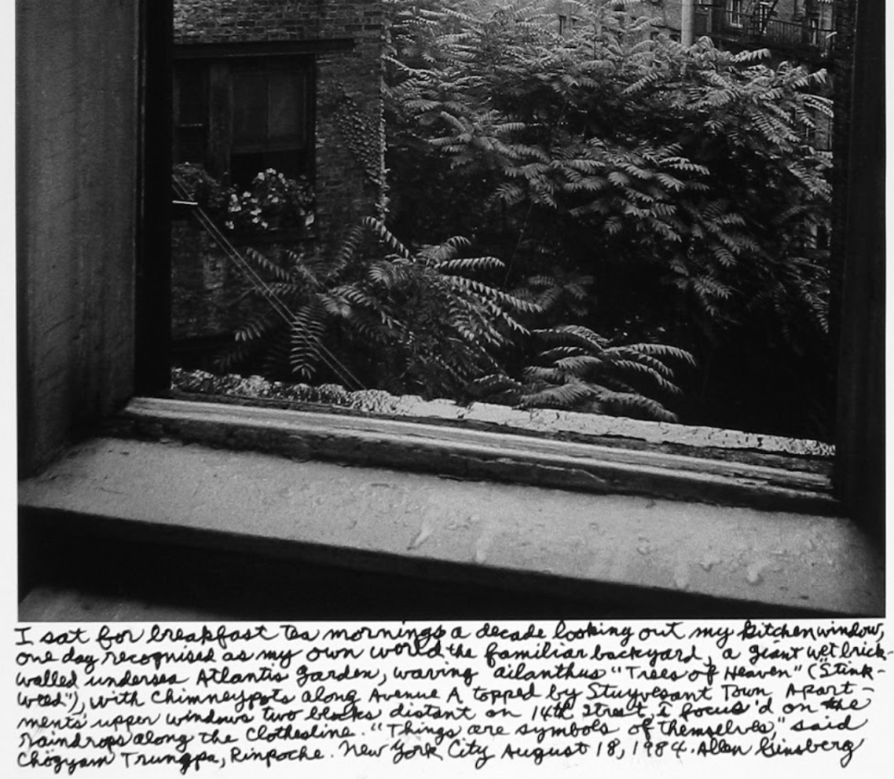
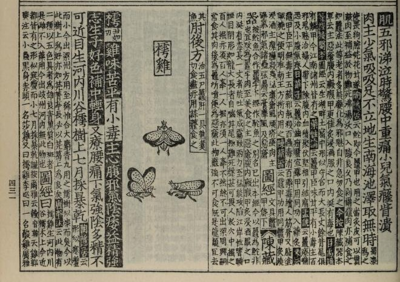
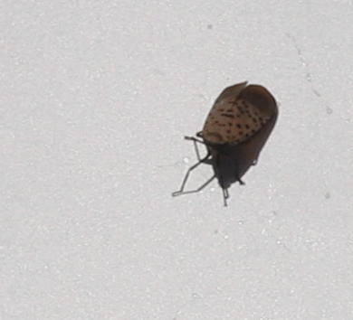
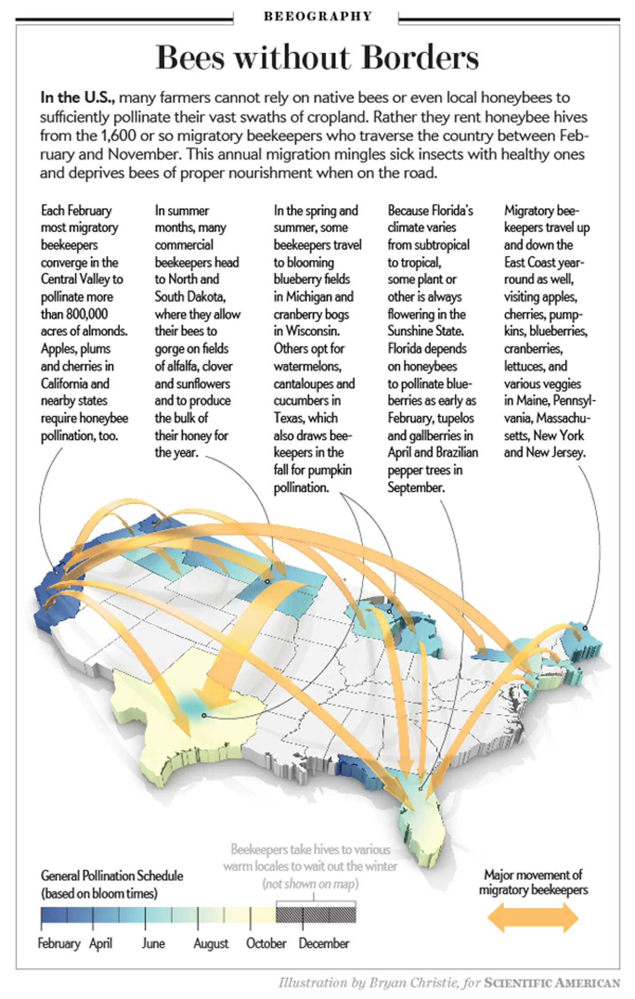

BUG
The first infestation of Spotted Lanternflies in New York City was found on Staten Island in August 2020 but it took me until summer 2021 to see one for myself. I was at the Dekalb R station and caught a glimpse of warm gray and bright crimson red on the ground. The insect was dead and crumpled but I instantly recognized it. After that, I seemed to see them everywhere. Their tiny corpses littered the sidewalks all through the Summer and Fall.
The Parks Department issued a statement to squash on site! But stomping on them was quite challenging because they jump. So I soon resorted to the "water bottle method" which involved placing the opening of an empty plastic bottle over a lanternfly and waiting for them to hop into the bottle and trap themselves. Once several lanternflies are caught in the bottle, you can place it in the freezer and they will die in 24 hours.
This "water bottle method" in many ways reminded me of my bug collecting as a kid. I had these plastic egg-shaped containers that I got from school around Easter time. Half of the "egg" was a solid color and the other half was clear plastic. My grandmother would heat up a knife on the stove and poke "air holes" into the clear plastic so that these eggs could become little observatories in which I could gently place caterpillars and beetles, watch them for a while and then release them later.
Through using the "water bottle method", I noticed things about the lanternflies that I wouldn't have otherwise. Like how their spots sometimes conjoined, appearing like a cell performing mitosis. Or how each outer grey wing was tipped with an intricate bricklayer's pattern and each inner crimson wing contained four or five white segments transitioning into a deep velvety black at the end. I saw that their antennae were shaped like red bulbs beneath their eyes, making them look like they were blushing. I learned that females are larger than the males. Observing all this made me realize how I had been so quick to take their lives without even knowing much about them.
"I engage with myself as a murderer, with the beautiful and harrowing juxtaposition of bringing death and life with the same hands within a matter of moments. By doing this, I try my hardest to never allow violence to be thoughtless and easy."
'An attempt to kill: what insects teach us about surviving genocides' by Dipaali Aragonda, 2024
I once saw someone wearing a button that had an illustration of a Spotted Lanternfly with the words "Squash Colonists” below it. To view lanternflies as colonists ignores our own implications as human beings in the movement of this species and in the conditions that contribute to its rapid proliferation. They first arrived in the United States in 2012 as a mass of eggs attached to a shipment of landscaping stone from South Korea (where they are also invasive) to Pennsylvania. They have since caused economic damage to the monocropping agriculture industry — particularly to vulnerable cash crops like grapevines. Monocropping tends to leave openings for pests and disease because a single crop lacks the diversity of plants and animals that would otherwise limit their spread and the close proximity of genetically similar, equally vulnerable plants lets outbreaks move through a field easily. In this case, the lanternflies feed on the sap of plants and then excrete a sweet liquid called honeydew which attracts sooty mold and other insects and because they are so new, they don't have natural predators yet that would keep their populations in balance.
Commercial shipping is one of the biggest movers of the invasive species. Species can inadvertendly end up traveling in cargo (espsecially commodoties made of wood) or in ballast water used by "tanker" or "bulker" ships.
"The more shipping we do, and the more connections we make, the more potential we create for the spread of species"
Danielle Verna, environmental monitoring expert
While the movement of species accidentally via ship isn't a new phenomenon (for example many seeds have travelled via ship ballast following colonial routes), the rate at which we ship goods globally today certainly plays a part. That, compounded with warming waters from climate change and pandemic- and political-related delays causing ships and containers to stall at ports for longer periods of time, only exacerbates the issue further.
"If we wish to lament them we could consider them as our spawn rather than as invaders for which we have no responsibility. Their occurrence outside their historical distribution results from our actions, from the choices we have made as a species (and as individuals), and from our habits: our consumption, our travel, our never-ending search for greater efficiency, productivity and speed. It is in part because of these patterns that [Invasive Species] are out of control."
Reweaving Narratives About Humans and Invasive Species, Brendan M H Larson
In my urban neighborhood (admittedly far from any vineyards), I've learned to look for the lanternflies on a very particular plant -- The Tree of Heaven. This plant has been in the United States much longer than I have and is in many ways, a quintessential part of New York City foliage. Ailanthus Altissima, Tree-of-Heaven, or Ghetto Palm, was brought to the United States in 1784 as an ornamental from China via Europe . But now, like the lanternflies, it's widely considered to be an invasive pest. Ailanthus Altissima is the lanternflies' preferred host species. Somewhere in the Spotted Lanternflies' intergenerational memory, the Ailanthus must feel like a familiar source of food and shelter. And Ailanthus Altissima is a familiar tree for a lot of New Yorkers as well. It owes its cultural foothold to the very characteristics that make it a "weed."
"There's a tree that grows in Brooklyn. Some people call it the Tree of Heaven. No matter where its seed falls, it makes a tree which struggles to reach the sky. It grows in boarded-up lots and out of neglected rubbish heaps. It grows up out of cellar gratings. It is the only tree that grows out of cement. It grows lushly . . . survives without sun, water, and seemingly without earth. It would be considered beautiful except that there are too many of it."
Betty Smith, A Tree Grows in Brooklyn

Ailanthus Altissima's proliferation reminds me of a Mugwort Dyeing workshop I took a few summers ago with artist Cara Piazza. Mugwort, a plant known for its medicinal properties related to sleep and dreaming, is also considered an invasive weed in New York City. Cara stated quite astutely that "Plants grow where we need them most. So it is no shock that in a city that never sleeps, populated with 8 million busybodies with insomnia, Mugwort grows invasively."
In Ayurveda, Ailanthus is considered to be a bitter astringent having a general cooling, anti-inflammatory, anti-dysentry and detoxing effect on the body.Perhaps Tree-of-Heaven's persistent presence might communicate to us something about the pollution and toxins in our urban environments?
"In indigenous ways of knowing, it is understood that each living being has a particular role to play. Every being is endowed with certain gifts, its own intelligence, its own spirit, its own story."
Gathering Moss, Robin Wall Kimmerrer
What then, I wonder, is the Spotted Lanternfly's story? Perhaps understanding more about its role in its native context could be a helpful place to start. Lycorma Delicatula is the scientific name for the Spotted Lanternfly and literally translates to Luxurious Lamp. But in China, The Spotted Lanternfly has two other names that I found to be key in learning more about this insect's history: 樗雞, or Ailanthus Chicken, and 紅娘子, or Crimson Lady.
And our Crimson Lady is mentioned in the 本草纲目, or Compendium of Materia Medica, the most comprehensive book written on Chinese Medicine during the Ming Dynasty by LI Shi-zhen. In the 本草纲目, several recipes are given for usages in ailments related to the blood, sterility, scrofula, and cataracts.

Outside of medicinal uses, I could not find much about any cultural significance for the Crimson Lady in its native habitat. One 1950s Journal Article written by Gaines Kan-Chih Liu states "Outside medicine, the only case known to the present writer is the interest shown in them by children in Shiangcheng-shien, Honan, not far from Hankow. Here the children would place the insect on its back, put some coarse sand on its breast, and watch it turning the sand around with its legs. This acrobatic performance sometimes is turned also into a competitive game among the participants."
I can see how The Spotted Lanternfly could be of interest to children. They are quite docile when handled and impressive in their ability to jump long distances (they are leaf-hoppers and don't actually fly). Spotted Lanternflies actually have gears on their hind legs that allow them to better synchronize for a more controlled jump. When I hold a large lanternfly in my hand, she truly feels spring-loaded.

I have not ventured (or needed) to try any of the lanternfly recipes in the 本草纲目, but I have tried Lanternfly Honey. The sweet honeydew excreted from the lanternflies has gained popularity as a snack (particularly in the autumn when there aren't many other food sources) amongst honeybees in the United States. In eating the lanternfly honeydew, honeybees sometimes produce a darker, strange-tasting — but safe to consume — called Lanternfly Honey.
When I sample the dark brown honey, I taste an almost smoky after-taste that has made me more inclined to use it in savory contexts. Beyond its novel flavor, the lanternfly honey is also being tested for potential health benefits and may have more antimicrobial properties than manuka honey. While I do find it meaningful that this antimicrobial treat has surfaced during a time of pandemics, I find that I am actually more fascinated by the interaction between these two nonnative species of insects. Both the honeybee and the lanternfly would not be in New York without our intervention as humans.
"Honeybee" can refer to all the species of the genus Apis, but in the United States the term most commonly refers to the European "races" of the species Apis mellifera. No species of Apis are indigenous to the New World; the familiar pollinator and honey producer Apis mellifera (which in this section I'll call honeybees or bees) was brought over by European colonists as part of the ecological package in which they conquered and transformed the New World with Old World flora and fauna"
Empowering Nature, or: Some Gleanings in Bee Culture by Anna Lowenhaupt Tsing
I used to be afraid of bees. I'm allergic and as a small child, a beesting landed me in the hospital. But for the past several years I've actually been beekeeping in Flatbush as a volunteer with my neighborhood community garden. I wear protective gear and bring my epipen. So far, (knocks on wood) I have yet to be stung by our bees. It's been a really fascinating thing to feel emotionally attached to a superorganism. I've really loved the relationships I've build with the bees and other volunteers. Through beekeeping, I've also gotten to learn more about the ethical dimensions to beekeeping in the United States.
Honeybees are integral to monocropping in the United States. Throughout the year, "migratory" hives are shipped around the country to pollinate specific crops like almond trees.

The domestication of the honeybee and our ability as humans to control where they pollinate and when makes them the ideal partner for monocropping. But "migratory" beekeeping is stressful for the bees. It removes the diversity they need from their diets and also means that they are left more vulnerable to parasites and disease. Commercial beekeeping for pollination continues to outpace that for honey production. At my community garden we also don't keep our bees in order to harvest honey. While occasionally we've been able to take excess honey, mostly the honey is left alone because it is the bees' food source. In commercial beekeeping, honey is taken and sugar water and other kinds of (not as nutritious) substitutes are given back to the bees. We think of our hive as educational and our priority is ensuring the bees are comfortable and healthy not that we get honey.
Last year, I attended a beekeeping conference. There I saw a talk by Sarah Kornbluth, a native bee researcher from the Smithsonian. I learned New York alone has over 400 native bee species and that honeybees (which were brought to North America about 200 years ago by European colonists) can spread diseases to more vulnerable indigenous bees and outcompete them for food. In a lot of ways honeybees have become the poster child for environmentalism, but in reality I think we value them (at least in the U.S.) because of their economic relationship to Big Agriculture. I still love our bees but I've come to the conclusion I would never own my own hive.
"Small is good, small is all"
adrienne maree brown
I feel a strong sense of gratitude to both the Spotted Lanternfly and honeybee. I think about how these bugs have been tiny teachers revealing to me larger human systems of control that lead to environmental harm.
As someone whose been coding for over a decade, I also think about "bugs" in the context of computers. People like to cite the 1947 discovery of an actual moth in Harvard University's Mark II computer as the source for that term but actually the etymology stretches back much earlier. For example, In an 1878 letter, Thomas Edison refers to bugs as “little faults and difficulties.” Even earlier still, "bug" in English refers to a hobgoblin, bugbear, or a mischievous spirit. Legacy Russell writes in Glitch Feminism, that a computer bug can shake "us into an awareness of our bodies and being." Now when I see a "crimson lady" leap across the sidewalk I think of it as a useful trickster. A bold reminder of the interconnectedness of our actions as humans the the changing environment around us.
- "Ailanthus Excelsa: Traditional Knowledge and Medicinal Applications." International Journal of Pharmaceutical Sciences, ijpsjournal.com.
- Aragonda, Dipaali. "An Attempt to Kill: What Insects Teach Us About Surviving Genocides." 2024.
- brown, adrienne maree. Emergent Strategy: Shaping Change, Changing Worlds. AK Press, 2017.
- "The Bug in the Computer." JSTOR Daily, daily.jstor.org.
- Fryer, Janet L. "Ailanthus altissima." Fire Effects Information System, U.S. Department of Agriculture, Forest Service, Rocky Mountain Research Station, Fire Sciences Laboratory, 2010, www.fs.usda.gov/database/feis/plants/tree/ailalt/all.html.
- Ginsberg, Allen. Photograph of the view from his kitchen window at 437 East 12th Street, New York, 18 Aug. 1984. The Allen Ginsberg Project, 14 June 2010, www.allen-ginsberg.org/2010/06/allens-12th-st-apt-gets-gutted/. Courtesy of the Allen Ginsberg Estate.
- Jabr, Ferris. "The Mind-Boggling Math of Migratory Beekeeping." Scientific American, www.scientificamerican.com/article/migratory-beekeeping-mind-boggling-math.
- Kimmerer, Robin Wall. Gathering Moss: A Natural and Cultural History of Mosses. Oregon State University Press, 2003.
- Knight, Sam. "Is Beekeeping Wrong?" The New Yorker, 21 Aug. 2023, www.newyorker.com/magazine/2023/08/28/is-beekeeping-wrong.
- Larson, Brendon M. H. "Reweaving Narratives about Humans and Invasive Species." Études rurales, no. 185, 2010, pp. 25–37. JSTOR, www.jstor.org/stable/41403541.
- Li, Shizhen (李時珍). Bencao Gangmu [本草綱目 / Compendium of Materia Medica]. Ming Dynasty, 1596. Digitized edition, Internet Archive, archive.org/details/chongxiuzhenheji00song.
- Liu, Gaines Kan-Chih. Journal article on the cultural and medicinal history of the spotted lanternfly in China. 1950s. JSTOR, www.jstor.org/stable/301853. Full journal title, volume, and page numbers not independently confirmed.
- Lydon, Tim. "Cargo, With a Side of Hornets, Flies and Crabs." The Revelator, 10 Jan. 2022, therevelator.org/cargo-invasive-species.
- New York State Department of Agriculture and Markets [@NYAgAndMarkets]. Post on X (formerly Twitter), 4 Aug. 2022, x.com/nyagandmarkets/status/1551951440708620289.
- Russell, Legacy. Glitch Feminism: A Manifesto. Verso, 2020, legacyrussell.com/GLITCHFEMINISM.
- Scanned Chinese-language reference text (title not independently confirmed). Consulted for the historical names of the spotted lanternfly. Internet Archive, archive.org/details/54053033-1-1299.
- "SLF Honey as a Strong Candidate for U.S.-Based Medical-Grade Honey." Conference poster, University of Texas at San Antonio, 2025, sciences.utsa.edu.
- Smith, Betty. A Tree Grows in Brooklyn. Harper & Brothers, 1943.
- "Spotted Lanternflies and Beekeeping." Center for Pollinator Research, Penn State University, pollinators.psu.edu.
- Tsing, Anna Lowenhaupt. "Empowering Nature, or: Some Gleanings in Bee Culture."